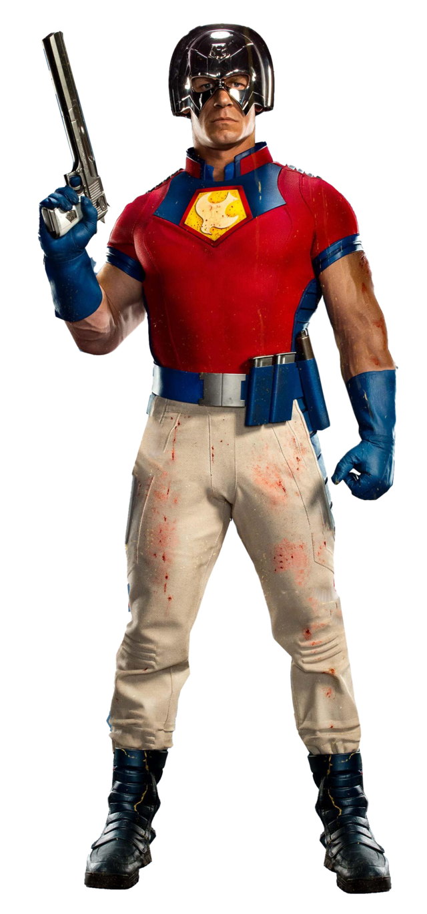

Informações do Pacificador
Voltar
Equipes DC

Criação do Pacificador
O Pacificador é um personagem dos quadrinhos da DC Comics, conhecido por sua dedicação
em alcançar a paz, mesmo que isso signifique usar a violência. Ele foi criado
por Joe Gill e Pat Boyette, fazendo sua primeira
aparição em "Fightin' 5 #40" em 1966.
O Personagem Pacificador
O Pacificador, cujo nome verdadeiro é Christopher Smith, é um lutador pela paz que acredita
firmemente em
sua missão de alcançar um mundo melhor. Ele é retratado como um soldado
altamente treinado e comprometido
com a causa da justiça. Smith possui uma personalidade
complexa, muitas vezes envolvendo-se em conflitos
morais sobre a eficácia
de suas táticas violentas para alcançar a paz.
Christopher Smith é conhecido por usar um uniforme distintivo, que inclui um capacete com um símbolo de paz.
Sua dedicação em evitar a violência e promover a harmonia o torna um personagem intrigante e contraditório.
Quadrinhos Importantes do Pacificador
O Pacificador teve várias histórias importantes nos quadrinhos da DC Comics, explorando sua missão pela paz
e seus conflitos pessoais. Aqui estão alguns dos quadrinhos mais relevantes do personagem:
"Charlton Premiere #3" (1967):
Esta edição apresenta a primeira aparição do Pacificador em uma história solo, estabelecendo sua
personalidade e missão.
"The Question Vol. 1: Zen and Violence" (1987):
Christopher Smith, o Pacificador, tem uma conexão com o personagem The Question, e essa série em quadrinhos
explora sua relação complexa enquanto enfrentam desafios morais.
"Suicide Squad Vol. 1: Trial by Fire" (1987):
O Pacificador é um membro recorrente do Esquadrão Suicida, uma equipe de anti-heróis encarregada de missões
perigosas. Sua participação na equipe traz dilemas éticos e questionamentos sobre suas táticas.
Adaptações em Outras Mídias
O Pacificador também teve aparições em outras mídias, incluindo animações e futuramente em uma série de TV
estrelada por John Cena. Aqui estão algumas das adaptações notáveis do personagem:
Adaptações Animadas:
O Pacificador apareceu em algumas animações da DC Comics, incluindo séries como "Batman: The Brave and the
Bold" e "Justice League Unlimited", explorando seu papel como um lutador pela paz em diferentes contextos.
Série de TV "Peacemaker" (2022):
O Pacificador recebeu sua própria série de TV intitulada "Peacemaker", que será estrelada por John Cena e
mostrará suas aventuras e dilemas em busca da paz, mesmo que isso signifique usar a violência.
Habilidades do Pacificador
O Pacificador é um lutador altamente treinado e habilidoso, conhecido por suas habilidades de combate e sua
dedicação em alcançar a paz. Aqui estão algumas de suas principais habilidades:
Maestria em Combate:
O Pacificador é um lutador experiente, treinado em várias formas de combate corpo a corpo e habilidades com
armas de fogo.
Inteligência Tática:
Ele possui uma mente estratégica e é capaz de avaliar rapidamente as situações de combate, adaptando-se às
circunstâncias para alcançar seus objetivos.
Resistência Física:
O Pacificador tem uma resistência física acima da média, permitindo-lhe suportar ferimentos e continuar
lutando mesmo nas condições mais adversas.
Especialista em Armas de Fogo:
Ele é habilidoso no uso de várias armas de fogo, demonstrando precisão e eficiência no combate armado.
Conclusão
O Pacificador é um personagem complexo dos quadrinhos da DC Comics, conhecido por sua missão de alcançar a
paz, mesmo que isso envolva o uso da violência. Sua dedicação, suas habilidades de combate e sua
personalidade contraditória o tornam um personagem fascinante. Com aparições em quadrinhos, animações e sua
própria série de TV, o Pacificador continua a intrigar os fãs com sua busca por justiça e paz. Sua maestria
em combate, inteligência tática e seu compromisso com a causa da paz fazem dele um membro valioso do
universo da DC Comics.